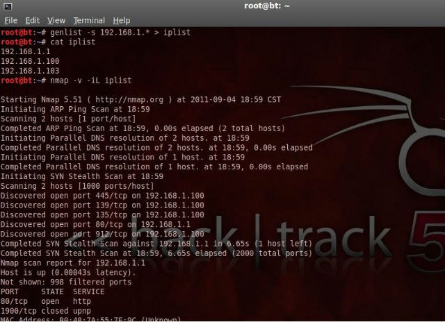

Usage: genlist [Input Type] [General Options]
Input Type:
-s --scan Ping Target Range ex: 10.0.0.\*
Scan Options:
-n --nmap Path to Nmap executable
--inter Perform Nmap Scan using non default interface
General Options:
-v --version Display version
-h --help Display this information
Send Comments to Joshua D. Abraham ( jabra@ccs.neu.edu )
genlist可以用来生成一个列表，该列表包含一个ip段内所有相应ping的ICMP报文响应的主机ip。生成的ip列表可以给后续的PBNJ或Nmap用。
下图中,首先先用genlist ping探测ip段192.168.1.*查找存活主机，存到列表iplist中备用，接着用nmap来扫描列表中的主机们。

root@bt:~# `genlist -s 192.168.1.* > iplist`
root@bt:~# `cat iplist` #显示iplist
192.168.1.1
192.168.1.100
192.168.1.103
root@bt:~# `nmap -v -iL iplist` #从iplist列表输入
从图中我们可以看到在nmap的扫描报告中分别列出了这三台存活主机所有开放的端口以及运行在相应端口上的服务。